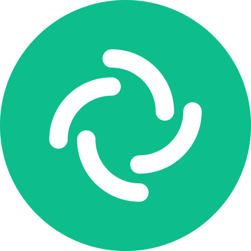

Любые параметры
Числовые поля вместо жёстких пресетов. Ограничение задаёт только железо, сеть и получатель.

Element MaxElement Desktop без искусственных ограничений
Вводите любое разрешение, FPS и битрейт — хоть 2K 165, хоть 4K 120. Передавайте системный звук и сразу видьте фактические параметры трансляции.
Windows x64 · последняя сборка · обновляется сам
Числовые поля вместо жёстких пресетов. Ограничение задаёт только железо, сеть и получатель.
Системное аудио передаётся вместе с экраном без отдельного виртуального микрофона.
Редактор реальных CSS-токенов обновляет интерфейс на лету. Пресеты импортируются и экспортируются.
Новая rolling-сборка скачивается штатным обновлятором Element Max и ставится поверх текущей.
Осознанная модель безопасности
Element Max не запускает криптодвижок и не показывает проверки устройств или предупреждения о «незашифрованных» сообщениях. Используйте его только с сервером, где открытая история комнат — намеренная политика. Для обычного публичного Matrix берите официальный Element.
Один установщик